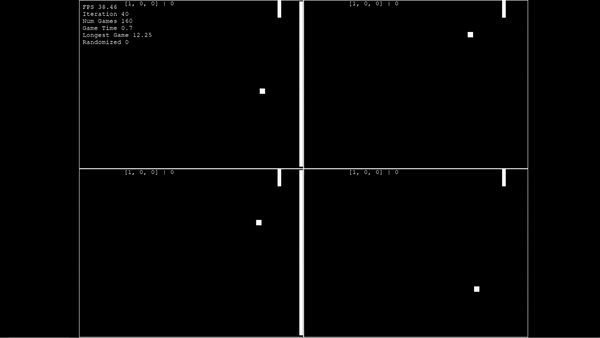
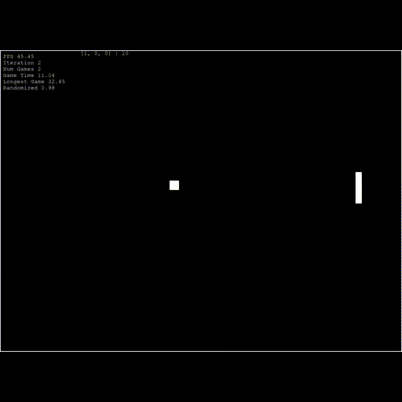

The following is a small AI project in python, but also the first AI project I decided to take up. The main objective was to obviously train an AI to play pong. The pong game was done with pygame and the neural network portion was done with pytorch. Beyond this project I hope to apply what I have done to more complex games such as tetris.
The network is comprised of 5 inputs, 1 hidden layer with 8 nodes, and 3 output nodes.
Inputs:
[
ball above paddle,
ball at paddle,
ball below paddle,
normalized distance between ball and right side of game area,
ball moving up,
ball moving down
]
Outputs:
[
move up,
stay still,
move down
]
Hyperparameters:
Learning Rate: 0.00025
Activation Function: Relu
Criterion: Mean Squared Error
Optimizer: Adam
My initial approach was to have only one output node while using tanh as the activation function. The intention was to just apply the output directly to the paddle movement. This approach ended up working only a portion of the time and in hind sight it wasn't a good idea to try to represent three different actions with one output. Although, this is my first neural network so it is a learning process.
As I went on I did switch from tanh to relu with three outputs which did improve it. Although there was a reacurring problem which inspired the switch to relu. Around half the time, or even more than half, the paddles would refuse to do anything besides moving up.

The other half of the time the neural net was learning properly but I wanted more consistency. I tried changing different things such as using Stochastic Gradient Descent instead of Adam or adding momentum or weight decay. In the end the solution ended up being as easy as increasing the randomness of the initial AI actions along with decreaseing the learning rate. Whether it was actually the learning rate or the randomness that increased consistency, i don't know.
For the most part the AI is able to learn how to play pong but this learning error does pop-up every now and then when training the neural net. I decided to move on regardless and hope further experience with training AI would shed light on these kinds of problems
In order to add variablility to the AI to help it explore actions and learn better there is an added randomness to the initial actions. In the beginning of development it was only around 40% of actions being randomized. After every game this value would decrease by 1% till it was zero. At this point the AI should have learned how to play near perfect and would not need randomness for learning. By increasing this value up to 80% or even 100% randomness I was able to get more consistent learning results every time the program was ran. The learning rate was also decreased from 0.001 to 0.00025

Although, even after these changes there are still problems with the AI not learning correctly on occasion. I've decided just to move on and hopfully after more experience I'll be able to come back and the problem will be more obvious.